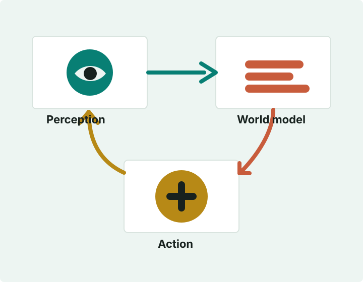

Academic Portfolio | Research Homepage
About
I work on practical AI systems for digital humans, including skinning, pose modeling and human-computer interaction. My recent interests include expressive avatar animation, vision-driven control, and tools that make research workflows more reliable.

Research vectors
Research Focus
Skinning & Deformation
Learning-based skinning methods to produce plausible, high-fidelity mesh deformation for human avatars under complex poses.
Digital Human Interaction
Vision-driven control and expressive animation pipelines that enable natural, responsive interaction between users and virtual humans.
Reliable Tooling
Small, inspectable systems for diagnostics, evaluation, data capture, and repeatable research workflows.